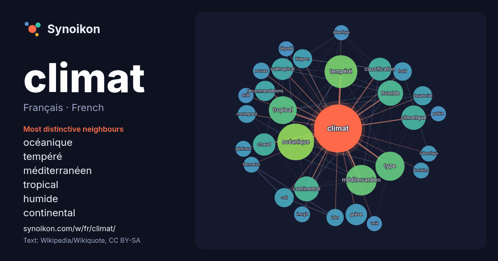

Français · French · popular word
climat
“climate” · The words found around it in 1027 instances from French Wikipedia, Wikiquote.

Most distinctive neighbours
- océanique 51×
- tempéré 47×
- méditerranéen 40×
- tropical 34×
- humide 26×
- continental 25×
- subtropical 22×
- climatique 22×
- chaud 21×
- classification 20×
- grève 19×
- recommandations 18×
- équatorial 17×
- coll 17×
- köppen 17×
- type 17×
- montagnard 15×
- froid 14×
- isbn 14×
- pouvez 13×
× = how many times more often than in general French Wikipedia text.
Most frequent neighbours
- océanique 59
- tempéré 47
- méditerranéen 41
- type 37
- tropical 34
- humide 28
- continental 27
- climatique 26
- classification 23
- chaud 22
- subtropical 21
- études 20
- grève 20
- nord 19
- recommandations 18
- région 18
- coll 16
- équatorial 16
- köppen 16
- terre 16
In context
- confondu avec la météorologie. Pour les articles homonymes, voir Climat (homonymie). Le climat est la distribution statistique des conditions de l'atmosphère Wikipedia snippets · Climat
- changement climatique en cours. Pour les changements du système climatique en général, voir Variabilité du climat. Pour l'histoire du climat sur Terre Wikipedia snippets · Changement climatique
- Le climat de la France est la distribution statistique des conditions de l'atmosphère terrestre sur le territoire national de la France, État transcontinental Wikipedia snippets · Climat de la France
- nom de climat maritime, est un climat tempéré humide qui se caractérise par des hivers doux et humides et des étés plus frais que pour les climats subtropicaux Wikipedia snippets · Climat océanique
- classification de Köppen, le climat méditerranéen proprement dit est le climat Csa (été chaud) et le climat supra-méditerranéen est le climat Csb (été tempéré). Wikipedia snippets · Climat méditerranéen
- du climat terrestre au cours des temps géologiques. Pour le changement climatique en cours, voir Changement climatique. La variabilité du climat (ou Wikipedia snippets · Variabilité du climat
- Pour les articles homonymes, voir Climat-Québec et Climat du Québec. Cet article est une ébauche concernant le Québec et un parti politique. Vous pouvez Wikipedia snippets · Climat Québec
- Le climat tropical est un type de climat présent entre les tropiques, généralement jusqu'à 14° de latitudes nord et sud. Dans le système de classification Wikipedia snippets · Climat tropical
More French words
- art
- automne
- carte
- chanson
- chat
- chemin
- cheval
- chien
- cloche
- cœur
- dieu
- désert
- eau
- famille
- forêt
- histoire
- hiver
- horloge
- jardin
- langue
- miel
- miroir
- monnaie
- montagne
- mort
- mère
- nature
- nourriture
- ombre
- pain
- pluie
- pont
- pouvoir
- printemps
- santé
- science
- sel
- silence
- temps
- tempête
- thé
- train
- travail
- trésor
- vie
- ville
- vérité
- étoile
- île
Precomputed on 2026-10-09 with default settings (±5 words, medium corpus). The interactive map can refresh it with live data.